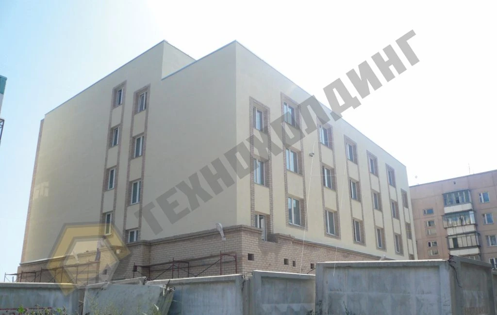
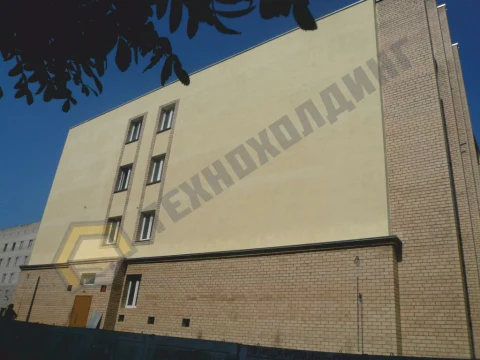
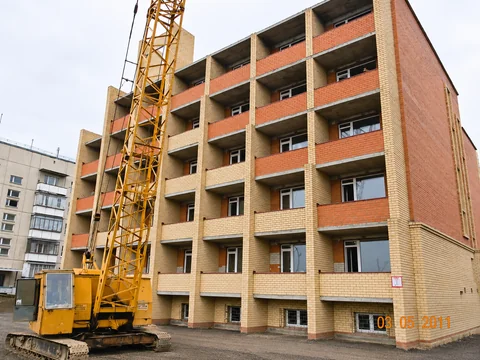
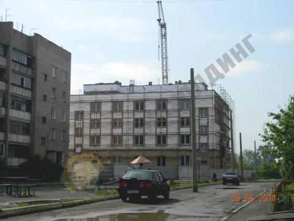
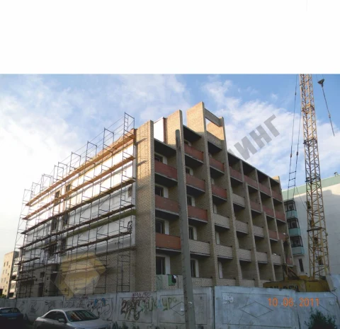
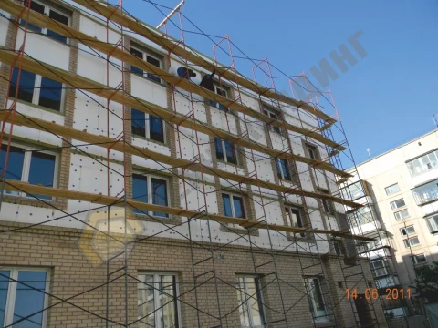
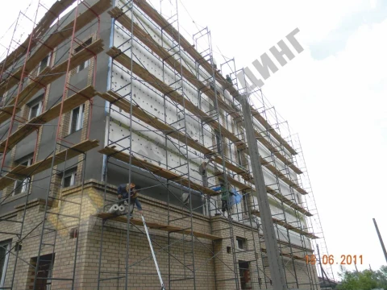
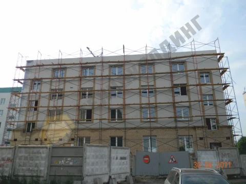
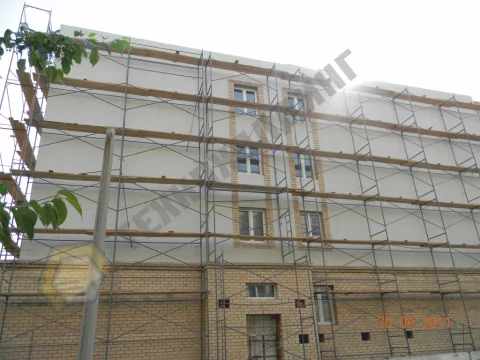
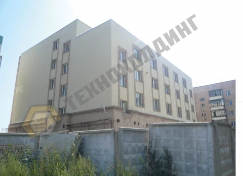

Жилой 5ти этажный дом в Чурилово
Фасадные системы
Компания ООО «ТехноХолдинг» выполнила работы по устройству фасада 5ти этажного жилого дома в п.Чурилово по системе наружной теплоизоляции Cerisit. Все работы были выполнены в кратчайшие сроки с соблюдением технических условий компании Cerisit. Для снижения затрат и улучшения теплотехнических характеристик в качестве теплоизоляции были применены пенополистирольные плиты. Для соблюдения требований пожарной безопасности были выполнены противопожарные рассечки из базальтового утеплителя в соответствии с регламентом. Показателем успешной работы стало получение рекомендательного письма от Заказчика-застройщика.
- Площадь работ
- 2 400 м²
- Дата сдачи
- 2011
- Заказчик
- ООО Геострой
- Расположение
- Челябинск
- Тип объекта
- Жилые
- Сроки работ
- Не указан
Решения и материалы
- Площадь
- 2400 м. кв.
- Гидроизоляция (верхний слой)
- Штукатурный фасад системы Cerisit
- Теплоизоляция (1 слой)
- ПСБ-С-35 (100мм)

-

-

-

-

-

-

-

-

-



Фото 1 из 10